長鼻子大叔
這陣子都在熬夜，作息時間有點不正常，旅行剛開始的時候都是晚上九點多就早早睡覺，隔天五點多起床準備出發。
現在都拖到凌晨兩三點才睡，早上很難爬起來，勉強早起也是一整天都精神萎靡不振，賴床睡晚一點的話，當天又會很晚抵達目的地，結果又是熬夜的循環。
加上太陽公公和時區同時也陷入混亂狀態，手錶的時間是台灣時間，但是距離這邊四百公里的哈薩克則是要將手錶調慢兩個小時，
晚上十點半才天黑的新疆西部，對哈薩克來說則是八點半就已經天黑了，總之時區很混亂就對了，希望自己可以調整的過來。
離開旅館的時候去一間老闆推薦的杭州包子店吃早餐，點了一籠包子和豆腐腦，包子還不錯吃，豆腐腦則是鹹的，
吃起來像放在酸辣湯裡面的口味，我比較喜歡加上砂糖的甜口味說。
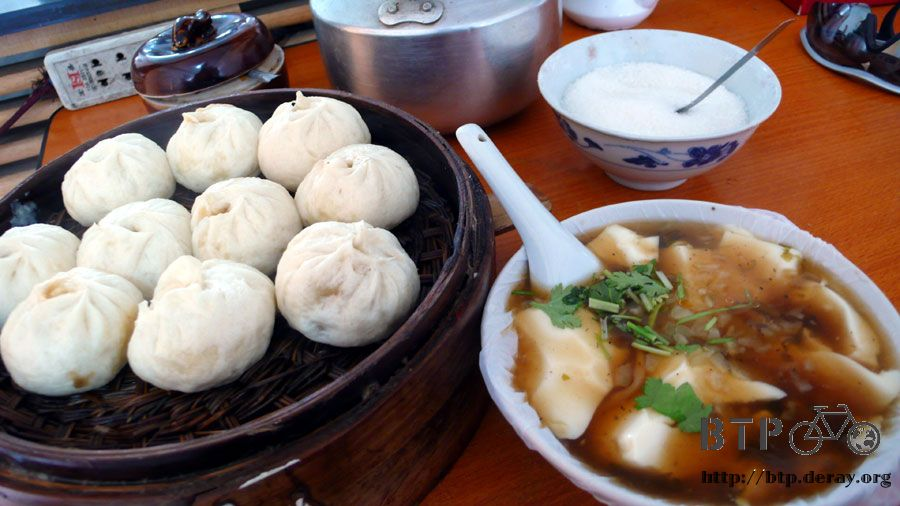
吃完早餐已經是早上十點，今天不知道要騎多遠才算到達目的地，因為目前距離中國和哈薩克的邊界大約五百多公里，
而手上的哈薩克簽證生效日則是六月二十四日，就算我提早到了邊界也沒辦法入境。
所以我可以選擇一路上慢慢騎到邊界去，或是依照正常的速度騎，早一點到邊界然後在那邊休息等著入境哈薩克。
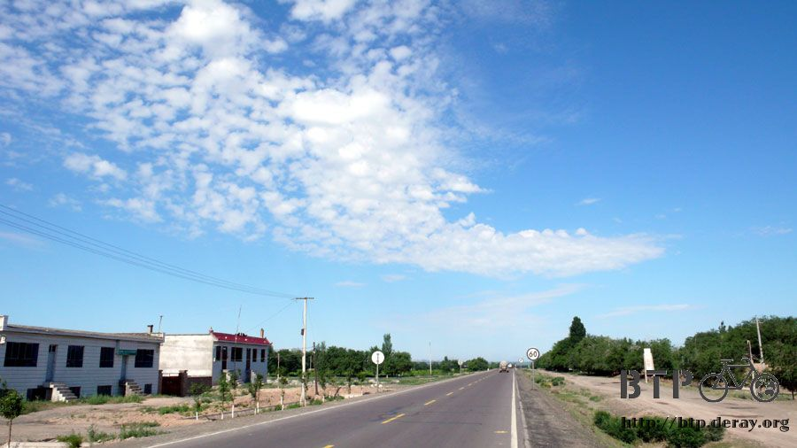
總之就先出發吧，騎累了就休息，騎多遠算多遠，就跟每個相遇到的人都會問我的問題一樣『騎這麼遠不會累嗎？』
不會呀～旅行怎麼會累。累了就休息、餓了就吃飯、天黑就睡覺，一個人自在的很。
就秉持著這樣的精神，騎到哪就算到哪吧～
小多靠上橋上，那我自己跑到橋下幹嘛？俗話說，人有三急嘛，水喝多了總得方便一下。~_~
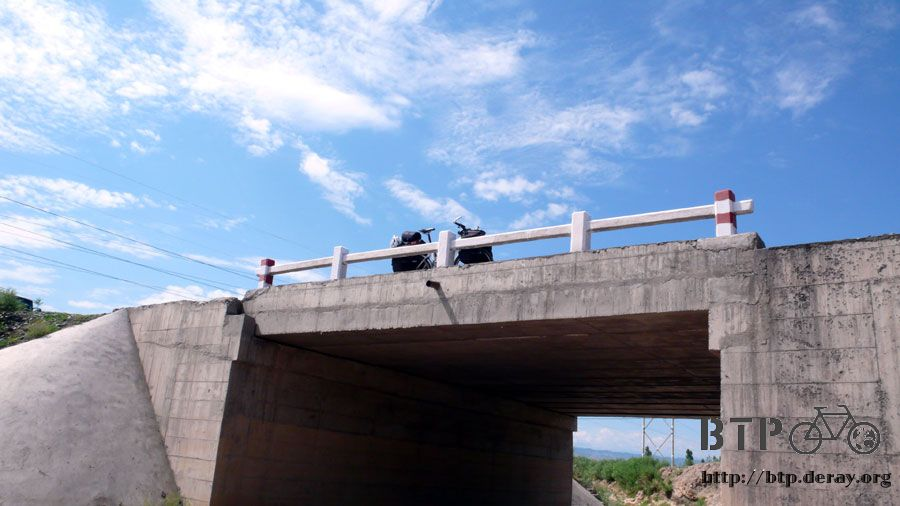
這一路上經過很多小河川，河水都是土黃色到接近深褐色，不知道上游是怎麼回事，怎麼會讓河水變的這麼混濁。
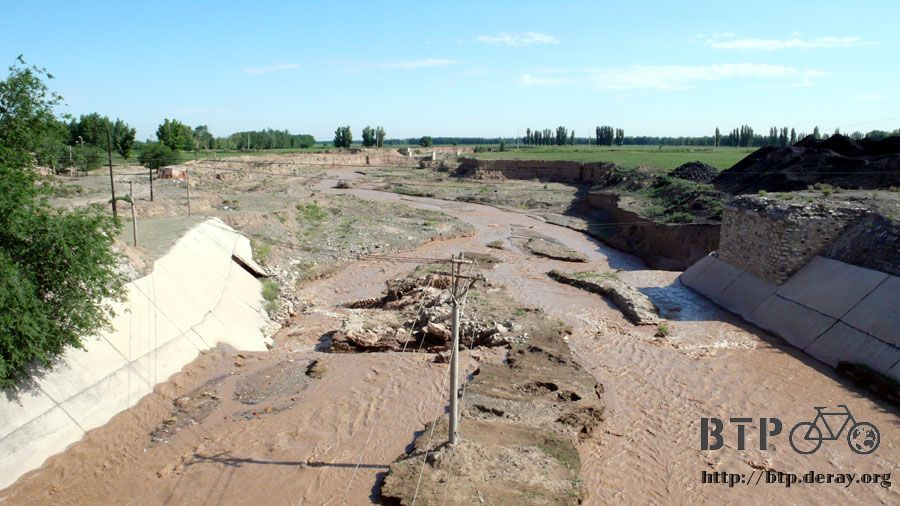
過了烏魯木齊之後。地名開始變得很不中文，像是呼圖壁、瑪納斯等，已經是由當地的原文音譯成中文的地名。
從大丰鎮開騎車，中午就輕鬆抵達瑪納斯了，這邊開始的城鎮，裡面都會有好大好大的煙囪，像是城鎮的附屬品一樣。
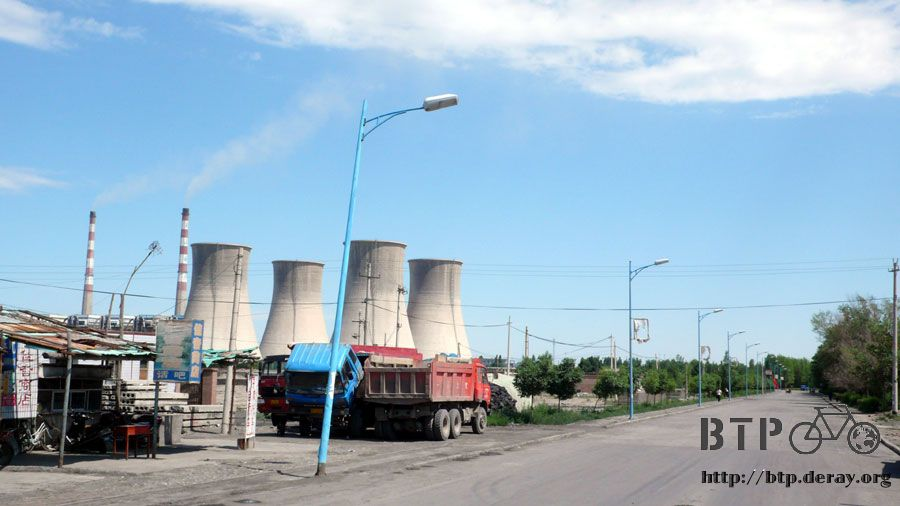
午餐在大丰鎮郊區的餐廳點了一碗丸子湯，本來想說十點才吃早餐，中午就隨便吃點喝個湯就好。
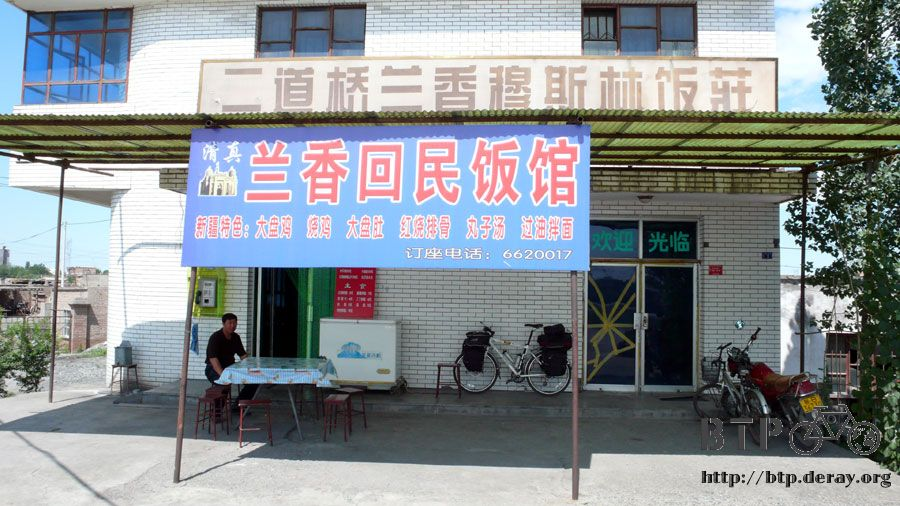
結果送上來一份丸子湯套餐，我還以為老闆聽錯了，趕緊說我只有點丸子湯，怎麼上這麼多菜？
兩個窩窩頭是送的，一盤小菜也是送的，小菜是由番茄、洋蔥、青椒切絲而成的沙拉，爽口中又帶點辛辣。
丸子湯裡還放了很多的羊肉片，比起之前吃過的都還豪華，配上窩窩頭就吃得很飽了。
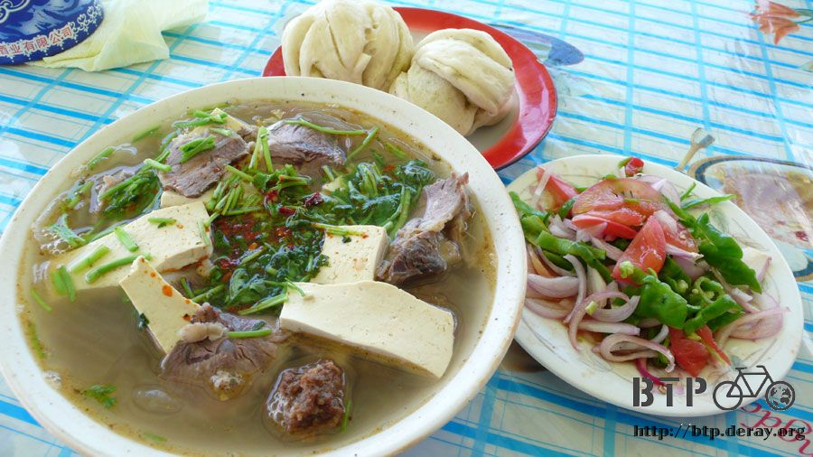
吃飯的時候店門口有一個大叔在那邊休息，習慣性的都會問一下接下來的路好不好走，距離還有多遠之類的問題。
很像RPG遊戲裡面會向路人打聽情報，打電動的時候常常只是問好玩的，對話內容都跳過不看。
真的跟路人講話的時候，我有時也只是為了找些話說，並不是太在意對方回答的內容，除非他的回答比較有衝擊性。
像是這個餐廳的大叔就很唬爛，從這邊到石河子，明明就是十幾公里的路，他跟我說還有五十公里才會到。
本來那一本攜帶了五十多天的藍色中國地圖全集，在烏魯木齊時寄回台灣去了，現在手上的地圖是在烏市買的，騎到邊界還算堪用。
我還以為是自己搞錯了距離，翻出地圖出來看，確定這個一臉正經的大叔在唬爛我。
繼續問一下往邊界的霍爾果斯還有多遠呢？明明就是四百多公里，他跟我說還有八百公里的路。
一直這樣唬爛我，都不怕鼻子會變長嗎？
我想到了好幾天前在某個地方吃飯的時候，有人問我迷路的時候怎麼辦？
我就說問一下路人就會有人幫忙講該怎麼走了，老闆叫我小心有些人會亂報路，讓我走完全相反的方向。
但是這一路上都還沒遇到亂報路的人，除了這個一直在唬爛我的大叔之外。
吃飽後在店門口睡覺休息，一點多老闆的小兒子回來了，他對小多很感興趣就稍微聊了一下天。
小兒子再過三天，二十日的時候就要考高中，考上的話就會去前兩天經過的昌吉市住校念書。
不管有沒有考上，只要考完試的當天，小兒子就要跟他的朋友騎自行車去烏魯木騎玩個幾天，排解準備高中考試的壓力。
好懷念的心情呀，為了準備高中考試，這個時期我也曾經歷過，那時候的生活除了念書就沒有其它的價值。
而念書是為了考試，考試則是為了上另一所學校繼續念書，真高興高中聯考我全部都落榜，才有機會認識五專的好朋友們。
五專的這幾年真是唸書十多年中最開心的時光，關鍵就在於住校的獨立自主性這一點吧。
我跟小兒子很嚴肅的說你一定要加油好好考，只要能考上的話，你就會展開新的生活了！
休息到兩點，小兒子跟我說路上小心，我則祝他考試順利。
離開瑪納斯之後，很快的就穿過了石河子，市區不在國道上，所以就沒有繞過去轉轉，接著往西邊騎。
離開石河子之後的下一個城鎮是三十公里之外的沙灣，下下一個則是一百公里外的奎屯。
本來想說騎到沙灣今天的距離就足夠了，再繼續騎一百公里實在有點拼命。
這一路上要說最漂亮的風景，首推空中變化多端的白雲。
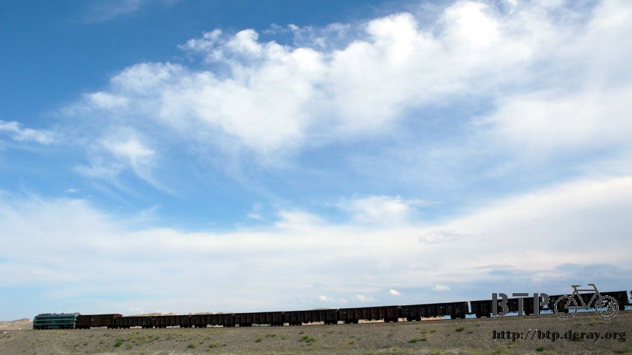
往沙灣的路上雲層的高度都非常的低，往頭上看是完全沒有雲的，雲都在遠方的山腳下。
好像是懶得飄在空中，所以就乾脆停在山腳下一樣，很慵懶的雲朵。
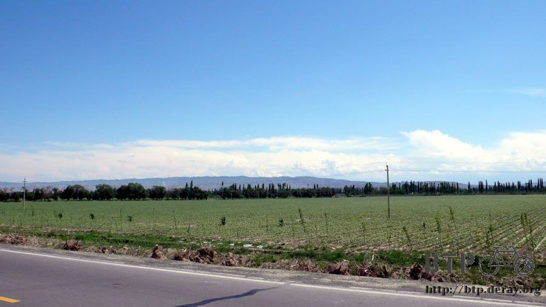
街邊的商店一反常態，不再是餐廳和修車林立的店家，而是連續一整排的花店，沙灣是個種花的城鎮。
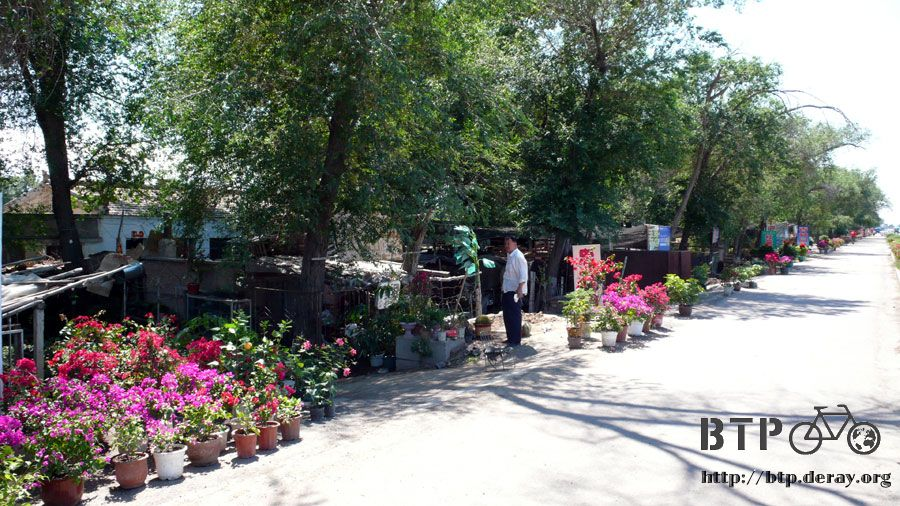
還有一個花園鎮，名字很漂亮，入口也很漂亮，居然還禁止大型車輛進入，騎著小多去繞一繞，是個花香撲鼻而來的市鎮。
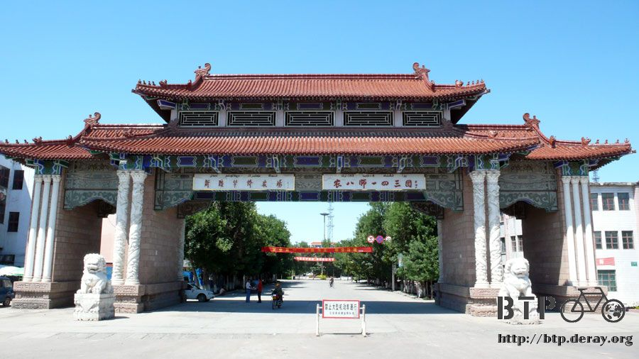
到沙灣的時候大概是下午四點半，有點想找旅館休息，這樣就能早一點睡覺，隔天早一點起床，但是另外一部份的我則想再騎一小段路。
可是並沒有所謂一小段路這種東西，如果今天不住沙灣的話，就得再騎四個小時才能到下一個城鎮。
另一個常常有路人會問我的問題『你怎麼不找個伴呢？』
一個人自在呀～想吃啥就吃啥，想去哪就去哪，想休息就休息，不用浪費時間在討論和妥協。
我想起遇到夏代的時候，那是第一次騎單車旅行有夥伴，很不知道該怎麼相處。
吃飯的時候，走過一間又一間的餐廳，然後走到街道的盡頭，都不能決定要吃哪一間好。
好不容易決定了餐廳，進去吃後連要坐在哪一個位子都要研究半天，靠窗的呢、還是靠門邊的。
更麻煩就是點菜的時候，要點自己喜歡吃的，還是點合菜一起吃？她有沒有什麼飲食上的禁忌？
這還只是吃飯這種小事而已，要是再加上住宿的地點、當天的目的地、休息的時間和地點、路線的選擇、騎乘的速度，甚至連花錢的方式都要討論。
我光是想到有這麼多事情都要討論我就很想自殺或是把夥伴殺掉埋在沙漠裡面湮滅證據。
一個人多好，騎著小多滑行在沙灣的街道，思考了十秒鐘，就決定繼續往下騎了，完全沒有爭執。
決定往下騎，但是也不強迫一定要騎到奎屯，現在都是綠地，只要一出現可以住宿的地方那就住下吧，隨遇則安。
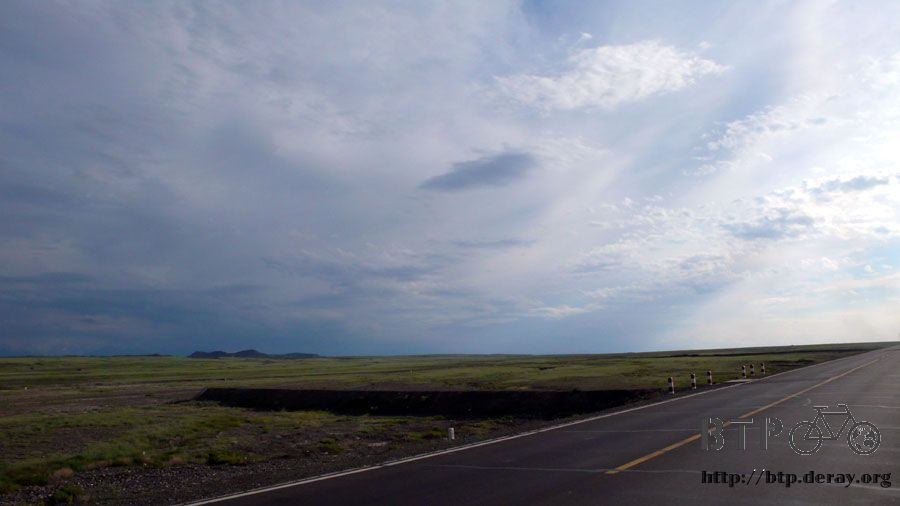
這裡除了耕種的農家、畜牧的人家和數量很多的工廠之外，也有產煤呢，好加在沒有運煤的大卡車跑來跑去的揚起煤灰。
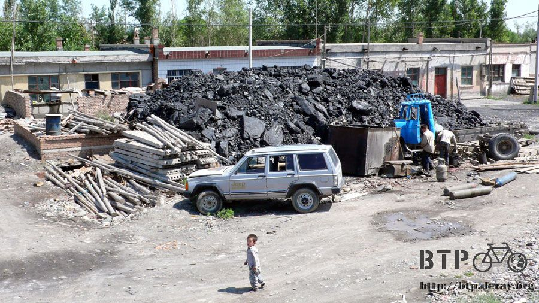
晚餐之前都是找到旅館之後才吃，今天先吃晚餐，吃完之後還得繼續騎車。
在沙灣的郊區，一間不起眼的回民餐廳吃炒麵，看來不騎到奎屯是真的沒地方能讓我住宿。
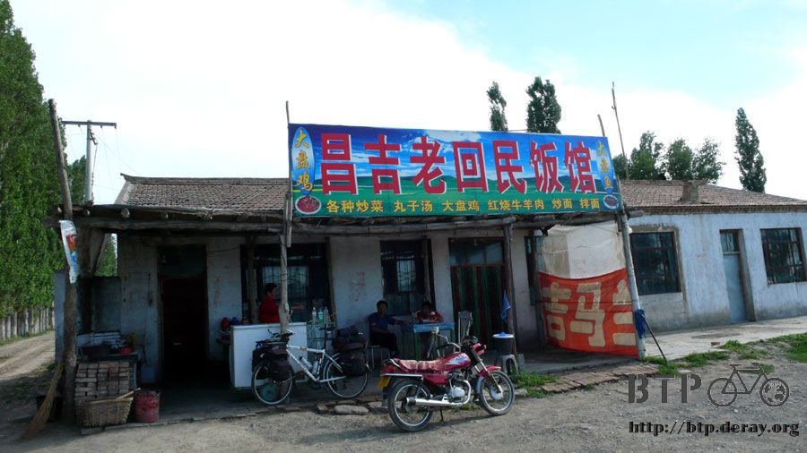
等等吃飽飯還要再騎四十公里，今天三餐飯後的運動量都很充足，希望腸胃不會因為這樣而壞掉。
炒麵上桌之前去雜貨店補充一點零嘴，因為包包裝了新的補給品之後已經裝不下零食了，新買的這些餅乾只好放在外套的口袋裡面。
嘴饞就從身上拆一包來吃，覺得自己很像小叮噹，可以從口袋裡拿出實用的物品。
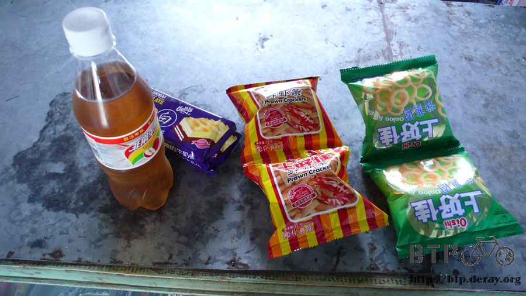
餐廳的其他客人都有去過霍爾果斯，畢竟距離這裡一點都不遠，有去過是很正常的，大家都說那邊是很大的地方，
這跟我的想像又不太一樣了，我心目中的邊界是有一道無止盡的圍牆上頭還有鐵絲網，有一個關卡和荷槍實彈檢查證件的人員。
關卡周圍則都是荒漠之類的地形，總之跟熱鬧扯不上關係就是了，但是看來似乎完全不是這麼一回事。
長這麼大沒看過國與國的邊界是什麼樣子，看來不親自到霍爾果斯去見識一下是不會有所認知的。
餐廳老闆所給的資訊就長鼻子大叔還要正確而實用，離開餐廳之後是九公里的上坡，九公里的下坡，平路直達奎屯。
市區依然不在國道邊，但是國道邊住宿跟餐廳都非常的多，就算不進入市區也沒關係。
估計十點之前應該可以抵達，現在天黑的時間是晚上十點半，十點天空還是亮的很，就算騎到這麼晚也沒有心理壓力。
一切的路況都如餐廳老闆所說，我也很順利的在十點前抵達國道邊的鬧區，找到住宿場所之後就能好好的擦個澡、洗衣服了。
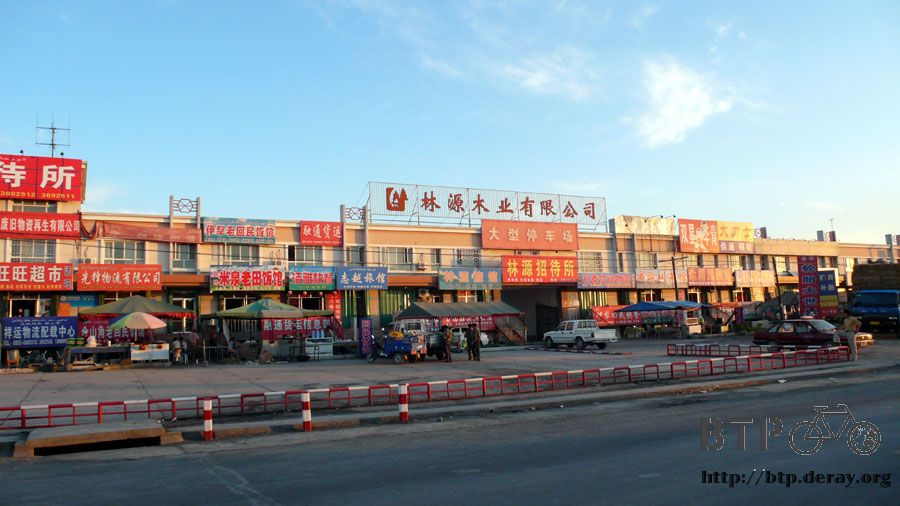
這裡的空氣不像甘肅戈壁灘那樣的乾燥，水氣含蠻充足的，所以身上穿的衣服都是汗溼一整片，不天天洗的話隔天再穿就會有酸菜的味道。
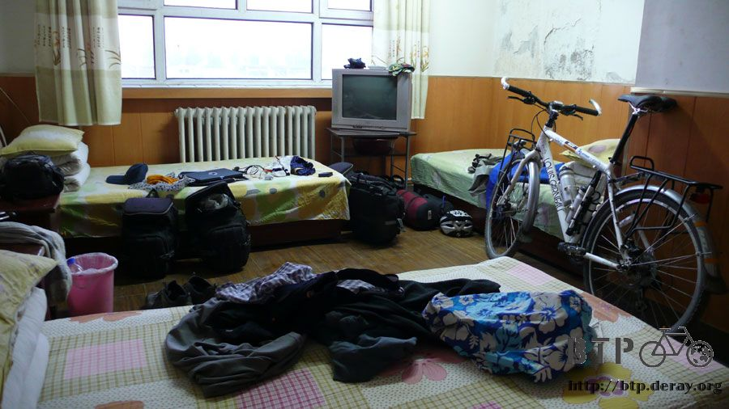
旅館的老闆整個人太好心，明明我只交了一張床的錢，而其它有住人的房間就還有空床，但是他開了一間空的四人房給我，沒有其他房客跟我擠。
有點不好意思只繳了十五元就住這麼大的房間，我會在退房的時候將房間恢復成原樣的，多謝老闆你讓我能安心的睡上一覺。
繼續閱讀：6.17 灰姑娘的呼嚕貓
中國-人民幣－ 1：4.3 台幣
6.16 |
總計：44.5元 |
早餐豆腐腦、大肉包子4元、午餐丸子湯8元、雜貨店花生米4元、餅乾1元、晚餐炒麵5元、冰棒四支2元、雜貨店餅乾2元、巧克力1元、汽水2.5元、住店15元 |
|